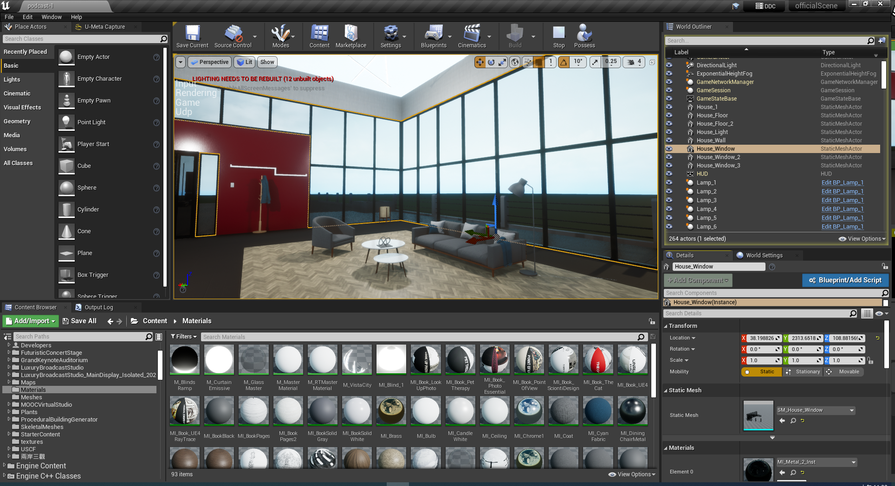
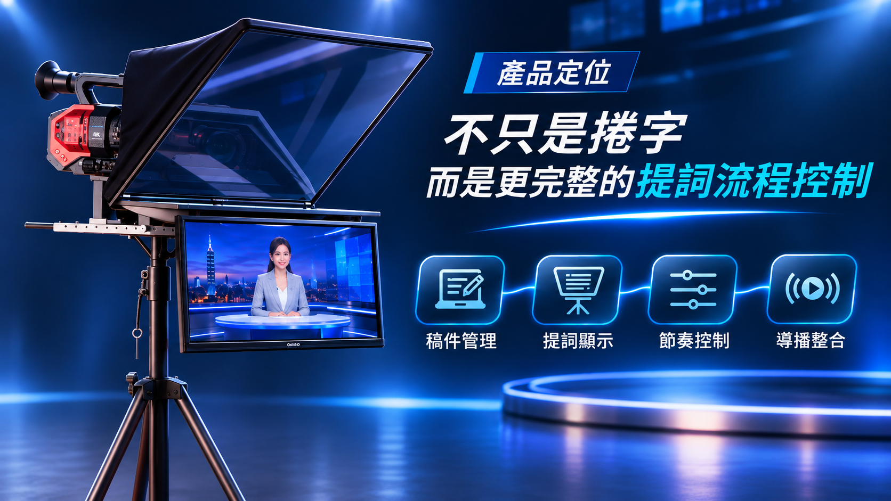

Our Services
從產品選擇到攝影棚建置，一站式協助
無論你想採購專業設備、打造虛擬攝影棚，或租借現成拍攝空間，我們都能依照製作需求提供合適的選擇。
Core Strengths
讓專業製作更容易實現
設備選擇更完整
從攝影機、虛擬攝影棚到導播與字幕設備，協助選擇適合的產品與組合。
專業拍攝空間
提供具備拍攝與製播條件的場地，減少自行準備設備及空間的負擔。
貼合需求與預算
依照內容類型、使用方式與預算，協助規劃合適的設備及服務。
配合未來需求擴充
從目前的拍攝需求出發，也為未來增加機位、場景及製作方式保留彈性。
Use Cases
讓各種內容呈現更出色
企業直播
記者會、產品發表、內部教育訓練與品牌直播。
線上課程
講師錄製、互動教學、知識型內容與數位教材製作。
節目錄製
訪談節目、論壇型內容、新聞風格錄影與虛擬場景拍攝。
品牌內容
品牌形象影片、產品講解、社群短影音與行銷內容製作。
Production Scenarios
看看我們能為你實現什麼
企業訪談節目
以虛擬場景搭配多機錄製，提升品牌內容專業感。

線上教育課程
結合簡報、講者與場景，建立穩定的課程錄製流程。
品牌活動直播
兼顧現場空間與製播品質，支援即時直播與錄製輸出。
Product Lineup
探索我們的專業產品
涵蓋虛擬攝影棚、導播、字幕圖文、提詞、影音訊號轉換及 AI 數位人應用，依實際需求選擇合適產品。